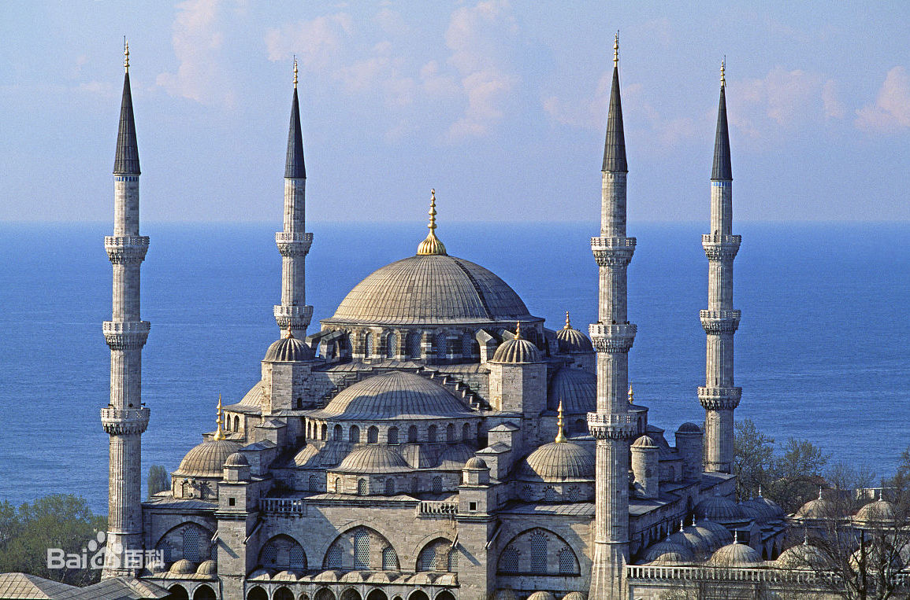

概述
蓝色清真寺，原名苏丹艾哈迈德清真寺，土耳其著名清真寺之一，17世纪初由伊斯兰世界著名古典建筑师锡南的得意门生Mehmet Aga设计建造，因清真寺内墙壁全部用蓝、白两色的依兹尼克瓷砖装饰故名，是伊斯坦布尔最重要的标志性建筑之一。
蓝色清真寺属拜占庭（东罗马帝国，以希腊文化为主体文化）风格的圆顶建筑，周围有六根宣礼塔，象征伊斯兰教六大信仰，蓝色清真寺是世界十大奇景之一。
历史沿革
1609年，14岁即位的阿赫迈特苏丹命令建筑师迈赫迈特·阿加（Mehmet Aga）在原来的阿伊舍苏丹的王宫上修建一座能与圣索菲亚大教堂（希腊文：Ἁγία Σοφία，英文：Hagia Sophia，意为上帝智慧，圣智教堂，1453年被征服君士坦丁堡的穆罕默德二世强行改为清真寺）相比的清真寺，以证明他是一个虔诚的伊斯兰教信徒。
1617年，清真寺完工。它是奥斯曼帝国时代建筑和艺术的辉煌杰作。这是拜占庭的希腊文化和奥斯曼土耳其的突厥伊斯兰教文化相结合的建筑，运用的是拜占庭帝国希腊文化的建筑技术来表现伊斯兰教文化，如果没有四周的六座叫拜塔，那么他就会被看成一座东正教教堂，这也是巴尔干半岛上信仰东正教的各国的建筑方式，是拜占庭帝国（东罗马帝国）所遗留下来的宝贵的非物质文化遗产。
交通信息
搭乘有轨电车1号线至Sultanahmet站下，向南步行约5分钟可到。
规模建制
寺院大小
建造蓝色清真寺未使用一根铁钉，建筑结构严谨，外观造型独特，400年间历经数次大地震安然无恙。清真寺的260个小窗、2万多块蓝色磁砖、数百块地毯和众多阿拉伯书法艺术作品是该寺的重要看点。
蓝色清真寺大圆顶直径达27.5米，另有4个较小圆顶，清真寺不可或缺的尖塔高43米，而且比一般清真寺多出一根；相传只有伊斯兰教圣城麦加的清真寺才能盖六根尖塔，蓝色清真寺在兴建时，建筑师听艾哈迈德一世“黄金的”的命令，没想到“黄金的”和“六根的”音很近，结果蓝色清真寺就逾矩有了六根尖塔。
建筑风格
从空中往下看，清真寺被包围在一片葱茏的树木中，6个高高耸立的尖塔分三排对称地立于长方形寺院的四角和中腰，主殿上是层次分明、大小不一的大圆顶，后院则是大小和形状都一样的小圆顶。白色的建筑与绿色的树林构成了一幅十分美丽的图案。寺院共有8个入口，分布于宽阔的院子的三个方位，使人们从其中的任一个方位都可以进入。走过门框均由大理石铺成的三道门，便进到内庭，里面粉红砾石、大理石或斑岩的大石柱之间以拱门相连接，拱顶着30个圆顶。用于洗礼的喷水池占据了内庭的中心，四周是6根大理石石柱。中央圆顶通过角穹靠在4个突出的拱上，角穹则依次倚托在4个直径1.6米的、巨大的、圆型的、有凹槽的角柱上，4个半圆顶各占中央圆顶的一方，各个角边的小圆顶则构成了清真寺的底座。苏丹的画廊在左边角处，旁有阿赫迈特一世的忏悔室。
苏丹阿赫迈特清真寺又叫蓝色清真寺，这是因为该寺的墙壁自其高度的1/3以上都使用了一种土耳其瓷器名镇伊兹尼克烧制的、刻着丰富的花纹和图案、以白色为底的蓝彩釉贴瓷，共有21,043片。这些瓷片的蓝色使得整个清真寺内似乎都充满了蓝色，所以人们称为蓝色清真寺。
蓝色清真寺最原始的特征在于它那透光性能极强的260扇窗户。时间的推移，后人对原来色彩丰富的窗户进行了修缮，这么一来，室内的透光性得到了增强，但有人认为却失去了原来的神秘感。
蓝色清真寺在伊斯坦布尔的清真寺中很突出。它的6个尖塔中的4个各有3个阳台，另外两个各有2个阳台，一共是16个阳台。据迈赫迈特·阿加回忆录上的记载，阳台数目原为14个，象征着当时的14个亲王，但后来又加了两个，据称是包括了耶尔德勒姆·巴叶兹德（Yildirim Bayezid）的两个儿子：埃米尔·苏莱曼（Emir Suleyman） 和穆萨·切莱比（Musa Celebi）。建造蓝色清真寺的初衷是为了和阿亚索菲亚教堂相竞争，但是它实际上却在规模和内部空间的平衡方面已经超过了阿亚索菲亚教堂，其面积达到了64×72平方米。
清真寺外有由36座大小不同的坟墓构成的陵墓，中间一座是艾哈迈德一世的。陵前是一座19世纪的大理石石面的钟塔，后面为图书馆。陵墓始建于艾哈迈德在位时，1617年艾哈迈德死后，由其子奥斯曼二世监督完工。该陵为方形，圆顶式的门廊，后院有广场。入口的大拱形门由6根大柱子支撑着，中央为一十字圆顶，旁边是一小圆顶。黑檀木的墓门上刻着《可兰经》经文。灰胶纸拍板窗现已被玻璃窗所替代，使里面非常明亮。窗间细镶板为17世纪的瓦所覆盖，分别为深绿、深红、蓝和白色。这一瓦饰的惊人的特点在于内部深蓝的背景下又有一组冷淡的白色铭文。圆顶和墙是泥夯的。在面对入口的大理石神龛上，写着奥斯曼二世关于建造该陵的碑文。